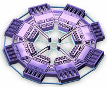
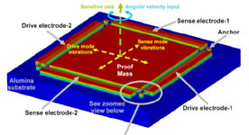

|
MEMGen
firmasýnýn geliþtirdiði otoinþa cihazlarý herhangi bir 3D
CAD programýyla tasarlanabilen STL formatýndaki model verisini
kullanarak birkaç milimetre boyutu geçmeyen karmaþýk yapýlý
parça veya mekanizmalar imal edebilme kabiliyetine sahiptir.
MEMGen Corp. '3-D MEMS Design Challenge' isimli bu
yarýþma ile teknolojisinin daha çok tanýnmasýný ve yeni uygulama
sahalarý açýlmasýný hedeflemektedir. Bu yarýþmayla ilgili
web sitesi þu adreste bulunmaktadýr: www.microfabrica.com/mems_design_challenge
13
Ocak'da duyurulan yarýþmaya 30 Nisan'a kadar katýlýmcý kabul
edilmiþti. Yarýþma sonuçlarý 9 Haziran'da açýklanmýþtýr: www.microfabrica.com/press_room/releases/2003_06_09.htm
Saðdaki
resim: ABD'nde California Üniversitesi'de (University of California,
Irvine) doktora eðitimine devam eden Cenk Acar tarafýndan
sunulan "Distributed-Mass
Micromachined Gyroscopes / daðýtýlmýþ kütleli mikro-iþlenmiþ
jiroskoplar" isimli proje birinciliðe layýk görülerek
10,000 USD nakit para ödülü ve SolidWorks 2003 3D CAD yazýlýmý
kazanmýþtýr. Ayrýca yaptýðý tasarýmýn bir prototipi de kendisine
verilecektir.
MEMS jiroskoplarý özellikle havacýlýk, askeri ve otomotiv
uygulamalarýnda çok küçük ve ucuz konum belirleme (navigasyon/
otomatik güdüm) sistemleri geliþtirmede kullaným alaný bulabilirler.
Cenk Acar'ýn kiþisel web sitesinden konuyla ilgili
daha fazla bilgiye ulaþýlabilir:
http://oxide.eng.uci.edu/Personnel/cenkacar.htm
Cenk Acar'ýn benzer bir konuda hazýrladýðý bir çalýþmasý
hakkýnda PDF formatýnda detaylý bir sunum ise yandaki linkten
indirilebilir (1 MB): "Four
Degrees Degrees-of of-Freedom Micromachined Gyroscope"
Soldaki
resim:
Orta Doðu Teknik Üniversitesi Elektrik-Elektronik Mühendisliði
Bölümü Öðretim Üyelerinden Doç. Dr. Tayfun Akýn ve
Araþ. Gör. Said Emre Alper'in "Tactical-Grade
Symmetric & Decoupled Micro-Gyroscope" isimli
projesi 3. olmuþtur.
Üçüncülük ödülü olarak 2500 USD nakit ve tasarýmlarýnýn ücretsiz
bir prototipini almaya hak kazanmýþlardýr.
Daha fazla bilgi için, Doç. Dr. Tayfun Akýn kiþisel
web sitesi: www.eee.metu.edu.tr/~tayfuna
Doç.
Dr. Tayfun Akýn ve Mehmet Akif Eriþmiþ tarafýndan
hazýrlanan "3-Axis
Accelerometer System / 3 eksenli ivme ölçer sistemi"
projesi ise dereceye girememiþtir.
Büyük
gelecek vaad eden MEMS teknolojisi konusunda Türk tasarýmcýlarýn
elde ettiði bu baþarýlara ek olarak MEMGen Corp.'da bir Türk'ün
(Vacit Arat) yöneticilik (CEO) yapýyor olmasý da gelecekte
Türkiye'nin bu teknolojide geri kalmamasý açýsýndan umut veren
önemli geliþmelerdir...
Daha
fazla bilgi için:
Aðustos 1999'da kurulan MEMGen Corp. (MicroElectroMechanicalGeneration),
ilk olarak Güney California Üniversitesi'nde (University of
Southern California) Adam Cohen* liderliðinde geliþtirilen
ve EFABT (Electrochemical FABrication / Elektrokimyasal Ýnþa)
ismi verilmiþ olan, mikro düzeyli parçalarýn (micromachines
/ mikromakineler) üretiminde kullanýlacak bir otoinþa teknolojisini
ticari hale getirmeye çalýþmaktadýr: Eylül 2002'de Vacit
Arat bu firmada yönetici (CEO) olmuþtur (www.microfabrica.com/press_room/releases/2002_09_09.htm)
MEMgen
firmasý ve teknolojisi hakkýnda ayrýntýlý bilgi "otoinþa
teknolojileri" raporundan elde edilebilir:
www.turkcadcam.net/rapor/otoinsa/tek-harc-yigma-puskurterek.html#microfabrica
|